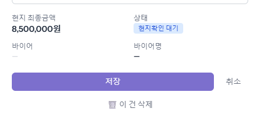
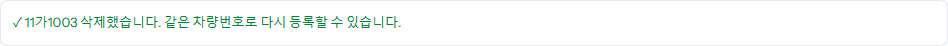
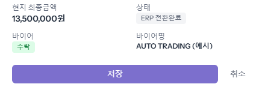

잘못 올렸거나 거래가 없어진 차는 매입예정 창에서 직접 지울 수 있습니다. 같은 차량번호는 하나만 올라갈 수 있어서, 거절된 차를 다른 바이어에게 다시 팔 때도 지우고 새로 올립니다.
[저장] 버튼 아래에 있습니다. 누르면 「이 매입예정을 삭제할까요? 목록에서 사라지고 같은 차량번호로 다시 등록할 수 있습니다.」 확인 창이 뜹니다. 지운 기록은 감사 로그에 남습니다.

「… 삭제했습니다. 같은 차량번호로 다시 등록할 수 있습니다.」가 뜨고 목록에서 사라집니다. 다시 올리는 방법은 「매입예정 등록」 가이드와 같습니다. 다시 올린 차는 검차 목록에 새로 들어갑니다.

아래 경우에는 버튼이 보이지 않습니다. 정말 지워야 하면 관리에게 부탁해 「관리자」 화면에서 지웁니다.
